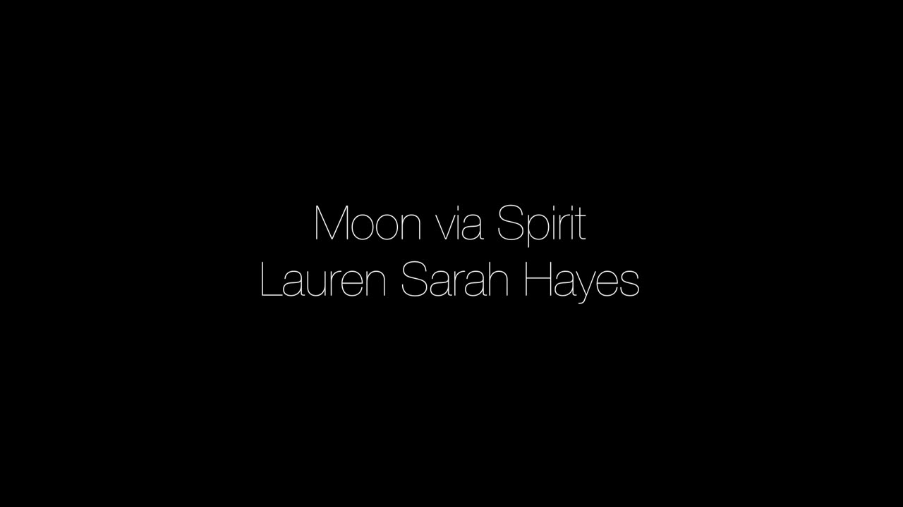

Moon via Spirit (2019) for hybrid analogue/digital live electronics
PROJECT DESCRIPTION
Moon via Spirit (2019) for hybrid analogue/digital live electronics.
The theme of NIME 2021 is “Learning to Play, Playing to Learn”, and this performance involves the exploration of how novel machine learning and audio decomposition tools can be integrated into a NIME that is already well-established, and has been performed with publicly for fourteen years. While much NIME research has focused on novelty within musical human-computer interaction, there has been a significant body of work which has demonstrated that much can be learnt from examining not only issues of longevity within NIME, but also how the performance practices of musicians working within the NIME field can provide fruitful sites of knowledge.
This piece was created using new tools from the Fluid Corpus Manipulation (FluCoMa) project, from the University of Huddersfield. The project studies how creative coders and technologists work with and incorporate new digital tools for deconstructing audio in novel ways: “FluCoMa instigates new musical ways of exploiting ever-growing baks of sound and gestures within the digital composition process, by bringing breakthroughs of signal decomposition DSP and machine learning to the toolset of techno-fluent computer composers, creative coders and digital artists” (www.flucoma.org).
In this piece, I explore these tools through an embodied approach to segmentation, slicing, and layering of sound in real time. Extensive use of the micro-sound technique pulsar synthesis is employed which is explored through the use of tangible controllers. Using the FluCoMa toolkit [1, 2], I was able to incorporate novel machine learning techniques in Max which deal with exploring large corpora of sound files. Specifically, this work involves, among other relevant AI techniques, machine learning in order to train based on preference; sort and select based on descriptors; and then concatenate percussion sounds from a large collection of drum machine samples.
More broadly, my improvisation instrument that I have been developing and performing with since 2007 is heavily based on machine listening techniques such as transient detection and pitch detection. While the former is linked not only to its origins involving the hybrid piano [3], but also its heavily percussive or attack based aesthetics, the latter has always afforded an element of unpredictability, given the sonic material that I work with. Using FluCoMa’s toolkit, I was able to explore not only transient detection, but other amplitude-based models. Furthermore, pitch detection involved ‘confidence’ estimates, rather than simply delivering values. In general, my approach to improvisation involves designing mutually affecting networks between my hardware and software. By introducing machine learning, I hope to explore this further so that performance remains less about decision making and control, and more about navigation, vulnerability, and play.
PROGRAM NOTES
My work as an improviser been necessarily and profoundly influenced by playing music together with people in various scenarios ranging from the conservatoire to the primary school classroom; the family home to the day care centre; the stage to the lecture theatre; the hospital to the party; and the national park to the mine shaft. This improvisation is the culmination of these lived encounters, where in each case I have found more or less tolerance for ambiguity and risk taking, more or less exchange of ideas, and more or less openness to curiosity and the welcoming of new possibilities. While hybrid analogue/digital technology has been my means of exploring and sculpting sound, it is in these shared collective experiences that new modes of being and creating have truly been nourished.
PERFORMANCE REQUIREMENTS
Improvisation, c. 11 minutes.
MEDIA

▶Moon via Spirit (2019) performed live at the Huddersfield Contemporary Music Festival, Bates Mill Blending Shed, Huddersfield, UK. Commissioned by hcmf// and FluCoMa.
REFERENCES
[1] Gerard Roma, Owen Green, and Pierre Alexandre Tremblay. 2019. Adaptive Mapping of Sound Collections for Data-driven Musical Interfaces. In The International Conference on New Interfaces for Musical Expression. 313–318.
[2] Pierre Alexandre Tremblay, Owen Green, Gerard Roma, and Alexander Harker. 2019. From collections to corpora: Exploring sounds through fluid decomposition. In International Computer Music Conference and New York City Electroacoustic Music Festival.
[3] Hayes, L. (2013). Haptic augmentation of the hybrid piano. Contemporary Music Review, 32(5), 499-509.